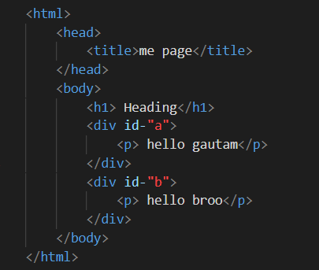

DOM in javascript
Notes:
* DOM stands for document object model.
* The dom is a cross- platform and language-independent.
* interface that treat as HTML, document as a tree structure.
* where each element is an object representing a part of the document.
Example:

Document
HTML
Head body
Title h1 div id div id
my page headings, p p
* All the particular tags will be known as elementt tag/ element node
* Title -> My page -> (My page is going to known as text node)
* ID -> (ID will be consider as attribute node)
* class -> (class will beconsider as attribute node)
Methods of DOM elements:
1) Query selector
2) Query selector All
3) Document.getElementById
4) Text content
5) Document.getElementByClass
6) Document.getElemntbytagname
ctreateElement: If we want to create any element dynamically means
without "document.createElement".
Now element will be created.
New element will be created.
* Query selector:
If we have multiple class or id property or same tags
it will indicate only the first class or first id, or
first tag property as output.
Query selectorAll:
-- with the help of query selector all we can the properties at a time.
If you try to pass some css property for all the elements
we have to call for loop inside the queryselector all.
Document.getElementbyClass
Text content: if we want to make changes any data in dynamic
way it means without changing it from html.
If we will call textContent inside the script tag we are able
to make changes the data as a dynamic way.
DIFERRENCE BETWEEN textContent AND innerHTML:-
1) innerHTMK will use to call any tag from html to script.
2) based on this particular tag the data will change and it
will give us the output.
3) text content is used to only change the data as a dynamic way.
4) If we try to call any html tags inside textcontent it will
return the tag AS output.
Regular Expression:
- A regular expression is an object that describe a pattern of characters.
- The js is regular expression class represents regilar expression
and both string and regExp define methods that use regular
expression to perform powerfulpattern matching and search and
replace function on text.
Syntax:
- A regular expression could be defined with the regExp() constructor.
var pattern = new regExp(pattern, attributes);
or
var pattern = /pattern/attributes;
Pattern:
- A string that specifics the pattern of the regular expression.
Attributes:
- An optional string containing any of the "g", "i" and "m" attributes.
- Those attributes specify global, case-insesitive and multi line
matches respectively.
Patterns of js:
1) [A-Z]
2) [a-z]
3) [0-9]
4) [A-z a-z]
5) [A-z 0-9]
6) [a-z 0-9]
7) [A-z a-z 0-9]
Quartifires:
1) ^ -Work as starting with
2) $ -Work as ending with
3) + -It matches any string containing one or more.
4) * -It matches any string containing zero or more.
Methods in regular expression:
1) test() -the regular expression test() method is used to
test for match in a string. If there is a match this method
returns true else it return false.
2) trim() - The trim() method removes whitespaces from both
side of string. But the trim() method does not change the original string.
3) value() -It is used matching the pattern data.